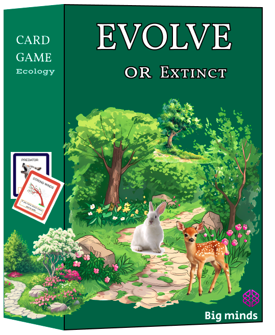
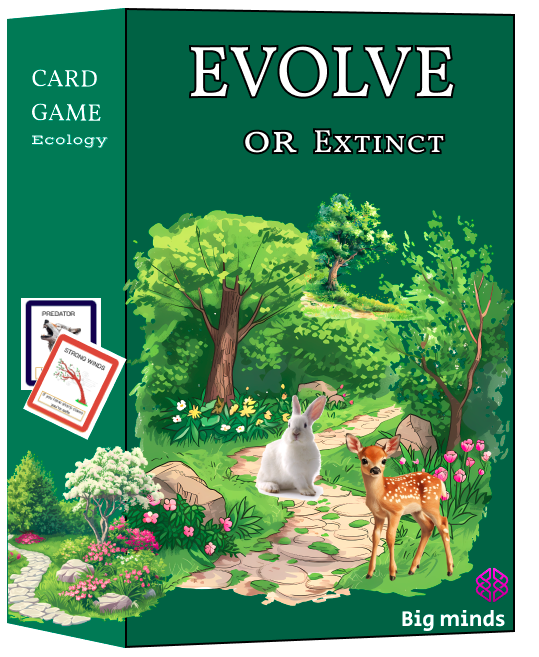

Evolve or Extinct
In designing Evolve or Extinct, the central goal was to teach evolutionary biology, focusing on adaptation, natural selection and environmental pressures. These are foundational concepts in life sciences that are often difficult to visualize or explain to young learners. To communicate these ideas effectively, we used simple, intuitive game mechanics where each player becomes an animal trying to survive in the wild.
Animal Cards represent real species, encouraging players to connect with biodiversity. Trait Cards symbolize inherited traits (like “Camouflage” or “Fast Legs”) that help an animal survive environmental dangers. Danger Cards simulate ecological challenges (such as droughts, predators, and ice storms), showing how survival is tied to having the right traits at the right time. By surviving dangers or collecting useful traits, players experience a simplified version of how species evolve to meet environmental demands.
Simplification and Representation
We simplified complex ideas like gene expression, reproductive success, and population dynamics into cause effect relationships that are easy to grasp. For example: Having Camouflage protects you from a Predator Attack. Not having a useful trait means losing a “life” (representing death or extinction risk). This clear linkage helps players internalize how specific traits provide survival advantages. We avoided technical terms and focused on intuitive understanding. Instead of explaining natural selection in a textbook way, we allow players to feel the impact of selection through gameplay. Tokens represent limited resources, encouraging strategic decision making, just like organisms must make trade offs in nature.
.png)